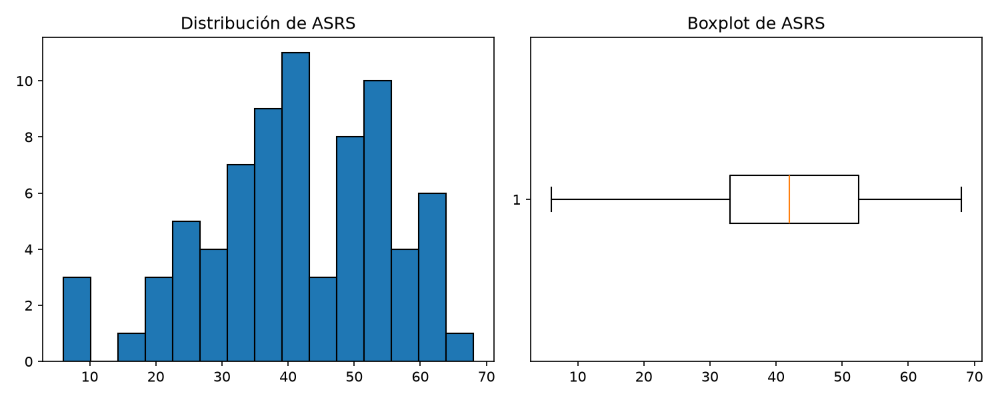
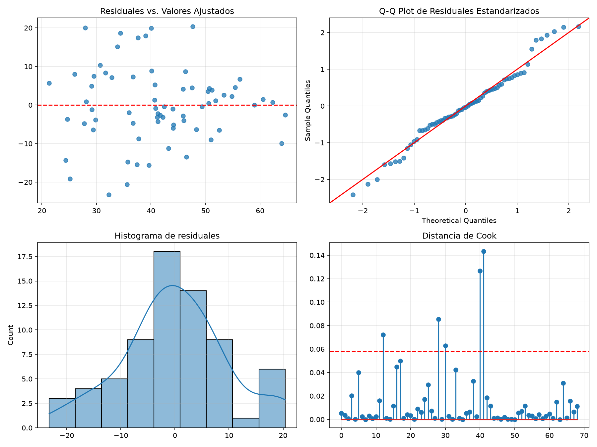
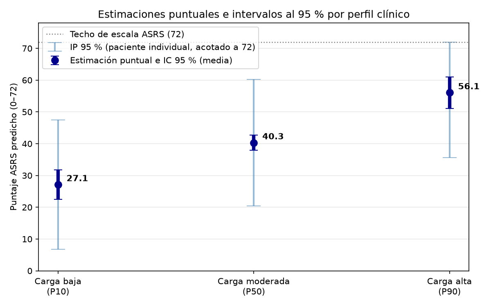

Severidad de síntomas de TDAH en adultos
Un modelo de Regresión Lineal Múltiple (MCO)
Mariana Salazar · Luis Alejandro Luna Martínez
Análisis de Regresión y Correlación · UABC · 26 de noviembre de 2026
MARIANA. Presentarnos y el título del proyecto.
El problema
¿Qué tanto de la severidad actual del TDAH en un adulto se explica por sus síntomas en la infancia , su impulsividad medida en una prueba y su nivel de ansiedad ?
MARIANA. El TDAH empieza en la infancia y muchas veces continúa en la adultez. Evaluarlo en adultos es difícil porque depende mucho de lo que el paciente reporta. Esta es la pregunta que queremos responder.
Los datos: HYPERAKTIV
69
pacientes adultos evaluados por sospecha de TDAH
3 archivos integrados · 75 pacientes → 69 con datos completos · Hicks et al. (2021)
MARIANA. Usamos el dataset clínico HYPERAKTIV: escalas clínicas, datos demográficos y una prueba computarizada de atención (CPT-II). Después de integrar y limpiar quedaron 75 pacientes, y 69 con datos completos en las variables del modelo.
¿Por qué regresión lineal múltiple?
Corte transversal: cada paciente se evaluó una sola vez, no hay orden en el tiempo.
Más de 2 predictores · $n = 69 \ge 30$ · Durbin-Watson $= 2.174$ (sin autocorrelación)
MARIANA. No usamos series de tiempo porque no hay mediciones repetidas ni orden temporal: cada fila es un paciente distinto. Nos interesa cómo cambia ASRS cuando cambian otras características del paciente. Cumplimos n ≥ 30 y más de dos variables independientes.
Metodología: CRISP-ML(Q)
Comprensión →
Preparación →
Modelado →
Evaluación →
Pronósticos →
Comunicación
4 notebooks, uno por etapa · Python + uv · Git
MARIANA. Organizamos el trabajo con CRISP-ML(Q): cada fase quedó en un notebook independiente, con control de calidad en cada etapa (evitar fuga de información, validar supuestos y registrar los cambios en Git).
Variables
Variable Qué mide Escala
$Y$ ASRS Severidad actual de TDAH (autorreporte, OMS) 0–72 $X_1$ WURS Síntomas de TDAH en la infancia 0–100 (corte ≥ 46) $X_2$ Commissions Impulsividad en la prueba CPT-II Puntaje T (> 60 elevado) $X_3$ HADS_A Ansiedad 0–21 (≥ 11 clínica)
Excluimos ID, ADHD y ADD para evitar fuga de información
MARIANA. ASRS es un cuestionario de cribado de 18 preguntas: entre más alto, más severos los síntomas. Los predictores ven al paciente desde tres enfoques: su historia (WURS), una prueba objetiva (CPT-II) y su estado emocional (HADS_A). No usamos los diagnósticos ADHD y ADD porque son el diagnóstico mismo.
Distribución de ASRS

Media 41.4 · Mediana 42 · Sin atípicos · ligera cola a la izquierda
MARIANA. La distribución es aproximadamente simétrica. Hay un grupito de 3 pacientes con puntajes muy bajos (6 a 10), pero el boxplot no marca atípicos y la media y la mediana casi coinciden, así que no había que transformar Y desde el inicio.
Correlación con ASRS
Variable $r$ $p$
WURS 0.685 < 0.001 Commissions 0.526 < 0.001 DPrime 0.398 < 0.001 HADS_A 0.304 0.011 Omissions 0.287 0.013 MADRS 0.171 0.154 HADS_D 0.112 0.361 Edad −0.116 0.320
MARIANA. WURS tiene la relación más fuerte: quien tuvo más síntomas de niño reporta más de adulto. Commissions conecta una prueba objetiva con el autorreporte. HADS_A es débil pero significativa. MADRS, HADS_D y la edad no salieron significativas.
Siempre hay que graficar
Omissions: un solo paciente (≈ 330) infla su $r$ · DPrime: $r = 0.88$ con Commissions
MARIANA. WURS muestra una relación lineal clara y pareja. Descartamos Omissions porque un solo paciente jala la línea hacia arriba: sin él la relación casi desaparece. Descartamos DPrime porque mide prácticamente lo mismo que Commissions. Por eso el r siempre se acompaña de la gráfica.
¿Cuánto pesa cada predictor?
Cambio en ASRS al aumentar una desviación estándar
MARIANA. Como cada variable tiene una escala distinta, comparamos cuánto sube ASRS cuando cada una aumenta una desviación estándar. Los síntomas en la infancia pesan el doble que la impulsividad, y la ansiedad casi no aporta una vez que se consideran las otras dos. Aquí le paso la palabra a Richie, que va a explicar cómo construimos y validamos el modelo.
Sin multicolinealidad
Predictor VIF
WURS 1.623 Commissions 1.390 HADS_A 1.205
Todos < 2 (umbral < 5) · $\text{VIF}_j = \dfrac{1}{1 - R_j^2}$
RICHIE. Integración de los 3 CSV, regla de calidad del CPT-II (Raw Score Omissions < 300) y 69 casos completos. El VIF confirma que no hay multicolinealidad entre los tres predictores.
El modelo estimado
$$\widehat{\text{ASRS}} = 7.635 + 0.368\,\text{WURS} + 0.308\,\text{Commissions} + 0.127\,\text{HADS\_A}$$
MCO: $\hat{\boldsymbol\beta} = (\mathbf{X}^\top\mathbf{X})^{-1}\mathbf{X}^\top\mathbf{y}$ · $n = 69$
RICHIE. Planteamiento del modelo y estimación por MCO en statsmodels.
¿Qué tan bien explica?
53.4 %
de la variación de ASRS ($R^2 = 0.534$ · $R^2_{adj} = 0.513$)
$F(3, 65) = 24.84$, $p < 0.001$ · error estándar residual $= 9.90$
RICHIE. El modelo en conjunto es significativo. WURS (p < 0.001) y Commissions (p = 0.010) son significativos; HADS_A (p = 0.655) no.
Significancia individual
Término $\hat\beta$ $t$ $p$ IC 95 %
Intercepto 7.635 1.25 0.216 [−4.57, 19.84] WURS 0.368 5.00 < 0.001 [0.22, 0.51] Commissions 0.308 2.65 0.010 [0.08, 0.54] HADS_A 0.127 0.45 0.655 [−0.44, 0.69]
RICHIE. Pruebas t con 65 grados de libertad. El intervalo de HADS_A cruza el cero.
Real vs. predicho
RICHIE. Los puntos siguen la recta identidad sin patrones curvos; hay una ligera contracción hacia la media en los extremos.
Supuestos del modelo

Shapiro-Wilk $p = 0.263$ · Breusch-Pagan $p = 0.080$ · DW $= 2.17$ · Cook: 0 casos > 1
RICHIE. Normalidad, homocedasticidad (cerca del 5 %), independencia y sin puntos que distorsionen el modelo.
¿Transformar? No
Modelo RMSE (escala ASRS) Shapiro-Wilk $p$ Breusch-Pagan $p$
Base lineal 9.61 0.263 0.080 $\ln(\text{ASRS})$ 10.51 < 0.001 0.027 $\sqrt{\text{ASRS}}$ 9.73 0.013 0.022 Sin HADS_A 9.63 0.283 0.041
Reversión: $\widehat{\text{ASRS}} = e^{\hat z + \hat\sigma^2/2}$ · $\widehat{\text{ASRS}} = \hat z^2 + \hat\sigma^2$
RICHIE. ln y raíz estiran la cola izquierda, rompen la normalidad y suben el error. Quitar HADS_A rompe la homocedasticidad. El modelo base es el único que cumple todo. (El RMSE aquí divide entre n; el 9.90 de antes es el error estándar residual, que divide entre n − k − 1.)
Pronósticos para 3 perfiles

RICHIE. Perfiles con los percentiles 10, 50 y 90 (sin extrapolación). Carga baja: 27.1; moderada: 40.3; alta: 56.1. Intervalos de confianza de la media separados entre sí.
Estimaciones puntuales
Perfil WURS Comm. HADS_A $\widehat{\text{ASRS}}$ IC 95 % media IP 95 % individual
Baja (P10) 16 43 3 27.1 [22.5, 31.8] [6.8, 47.5] Moderada (P50) 38 57 9 40.3 [37.9, 42.7] [20.4, 60.2] Alta (P90) 65 73 16 56.1 [51.1, 61.0] [35.7, 72.0]*
* acotado al máximo de la escala (76.4 sin acotar)
RICHIE. Diferencia entre el intervalo de confianza (para el promedio de pacientes con ese perfil) y el de predicción (para un paciente individual).
Conclusión
El modelo sirve para cribado y estratificación , pero con un margen de ±20 puntos por paciente no sustituye la evaluación clínica.
47 % de la variación sin explicar · $n = 69$ · escalas de autorreporte
CIERRE CONJUNTO. Hay 28.9 puntos de diferencia entre los perfiles de carga baja y alta, así que el modelo distingue niveles de severidad. Pero a nivel individual el margen es amplio, y por eso complementa la entrevista clínica, no la reemplaza.
Gracias
¿Preguntas?
Banco de preguntas en docs/GUION_EXPOSICION.md.